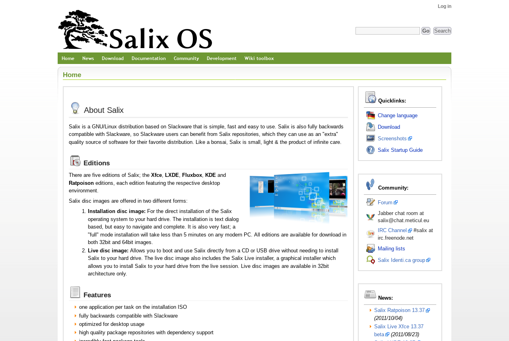
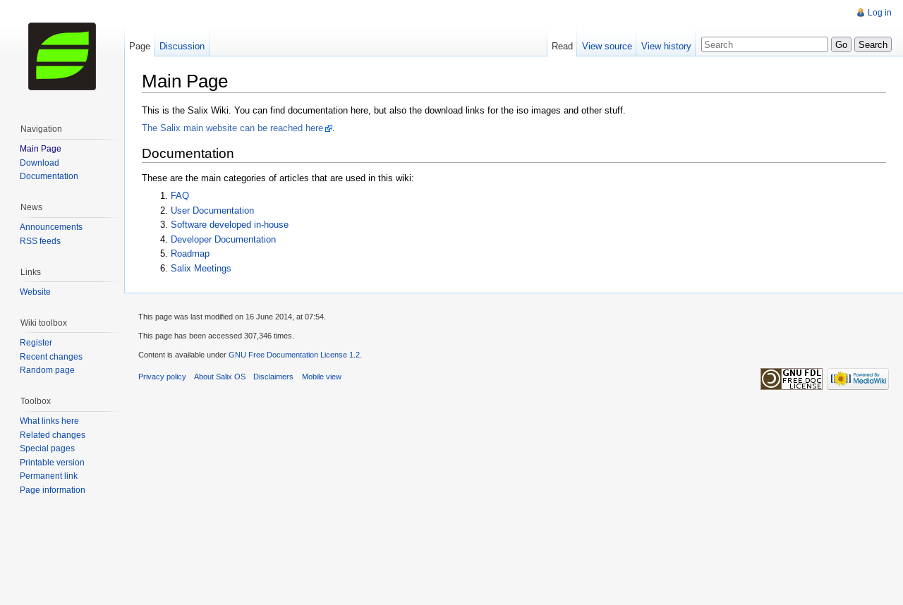
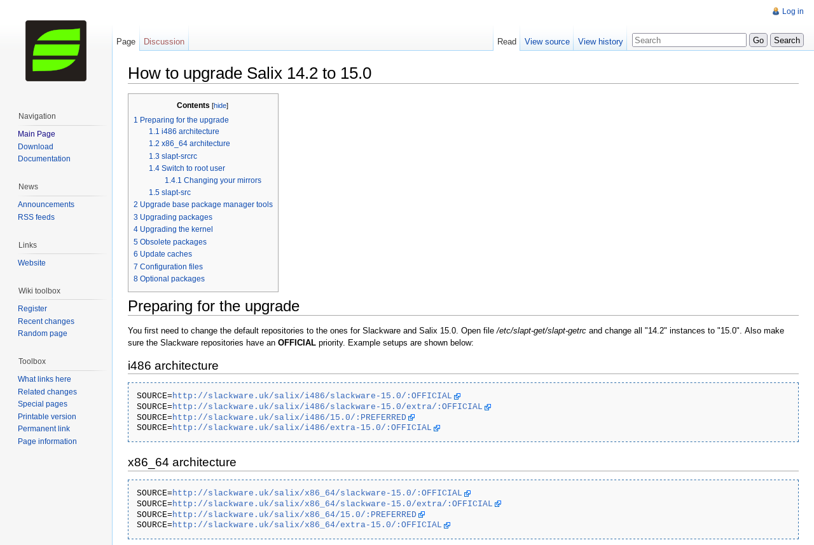

New Documentation Site
I’ve been wanting to do this for a long time. I first started working on it five years ago!
A bit of history first… When we were trying to build the Salix presence on the web, we knew we had to have at least three things:
- A main landing page
- A support forum
- A documentation project
For the forum, we had settled on phpbb, which seemed to be the most feature-rich option. It was well-supported, and we already had some experience with it. For the other two, we were considering our options.
We had created our wiki even before the first official Salix release, back in 2009. The idea was simple: we needed a place to document stuff, for ourselves and for our users. I remember we tried some alternatives, including DokuWiki and probably some more options I don’t recall now, but we finally settled on MediaWiki, the same software that Wikipedia runs on. I remember we had even deployed DokuWiki for testing. It had the advantage that it didn’t require a database, but we had some concerns that, being a smaller project, it might not survive long. Some of the other options we had considered certainly didn’t. We were wrong about that. But MediaWiki was more popular, it was supported by a huge organization, and importantly for us at the time, it had better theming support.
We had decided to have a unified look for the main page and the wiki. The easiest way to do that was for the wiki to actually be our main page! That way, we didn’t have to mess with a different content system for the main page and wiki too. It made sense at the time. We wanted every member of the team to be able to edit everything, including the main page, the downloads section, the team page, screenshots, everything. And we wanted to be able to do it without having to deal with code of any kind.
As we didn’t want to have the standard Wikipedia-like looks that MediaWiki comes with by default, we had created our own custom theme. We spent a lot of time working on it, but finally, we were happy. Here is a screenshot of our main page from that era, thanks to the Wayback Machine.

Things worked like that for a few years, but then, for reasons explained in a previous blog post, we decided to split the main page from the wiki.
Some more problems with the wiki became apparent as time went on. First, it was obvious that our main page was much faster now that it was just static content. MediaWiki uses PHP and stores everything in a database. This makes things noticeably slower. There is also the issue with security updates. We had to keep updating PHP, the database, as well as the MediaWiki software itself for security, and that’s a lot of work; a lot of times an update brings an incompatibility, and you have to fix things that previously were working just fine.
An additional issue was spam. We already had to deal with the spam problem in the forums. Now we also had to deal with spam on the wiki. Spambots would constantly register new accounts and try to push spam on the wiki. Someone had to be on top of that and monitor every single new page or edit all the time. It was even more tedious work, and, understandably, nobody wanted to do it.
Our solution was to disable user registration on the wiki. New users that needed to register would have to send us an email, and we would manually create new accounts. That certainly stopped all spam activity. But it also prevented new users from registering and contributing to the wiki. A wiki’s primary purpose is for users to take control and add content. Any new hurdle that is introduced is going to hinder contributions.
Indeed, activity on the wiki started to drop. Old contributors perhaps found new interests and left. And new contributors were very few and getting even fewer as time went by. The fact that the time between Slackware releases and therefore Salix releases increased probably played some role here too, but that is probably a subject left for another post.
The fact was that the wiki was not serving its intended purpose anymore.
MediaWiki is made to support even millions of users and millions of pages. But we only had a few hundred pages and a handful of users. For our use case, it proved to be overkill. I just wanted to get away from the burden of having to constantly track security updates for PHP, MariaDB, and the MediaWiki software itself. For our scale, it wasn’t worth it.
I started looking for alternatives. I wanted to keep it simple for users who wanted to contribute. But at the same time, I wanted to never have to deal with spam ever again. I had already started using Hugo for our blog site, and I saw a few documentation-oriented themes, which I tried. Some I didn’t like, but I found Learn. This seemed perfect! It would only need some minimum customizing of the logo and colors, and it would be ready. It even had search functionality included, implemented client-side through JavaScript, of course, as all content is static. But that worked well too. And it was fast. It really made a huge difference to have static content compared to running PHP and a database.
So, I started working on it. It was very easy to write new content; it’s only Markdown after all. The trouble was with converting the MediaWiki syntax to Markdown. There appear to be a few projects on GitHub that promise to do exactly that, but none of them actually work. We had hundreds of pages in our old wiki. I could convert them one by one, but that was too painful. If you’re thinking that I should have just used pandoc, it works, kind of. But it completely messes up code blocks. It converts code blocks to multiple single lines of code spans instead. I looked at the GitHub issue tracker, and sure enough, there was an issue filed about it. Sadly, it was closed with no resolution; it was the intended behavior according to the pandoc developers! Honestly, it was less work converting an entire page manually than converting it with pandoc and then trying to fix the code blocks. I converted a few pages manually, but it was too tedious and boring. My Salix TODO list was full with other stuff that needed my attention anyway, so I kind of left it like that. But I always kept it at the back of my mind that when I find the time, I should probably get on with it again.
And so I finally did. I looked around for any tools that might help me with converting the MediaWiki formatting to Markdown, but nothing worked properly, at least not for my use case. So I just wrote my own Python script that parsed a file in MediaWiki format and produced a Markdown file with correct formatting on code blocks. It wasn’t perfect; there are a lot of things in MediaWiki formatting that it misses, but that was OK, I only needed it to work with our content, not every MediaWiki article out there, and for that purpose, it was enough. I still needed to manually fix a few things after conversion, but these were a lot easier than trying to manually fix the broken code blocks.
It took me a few hours to go over every page in our old wiki and convert it to Markdown. In the process, I dropped a lot of stuff. Our new documentation site does not include every single page that was on our old wiki, in fact it is much smaller.
MediaWiki supported localized pages with a plugin, and we had used that. You could have a page, and then you could have the same page translated in another language, and the browser took you to the localized version if your locale matched. The problems with those were that:
- Only a small fraction of all pages were localized to a specific language, and that made for a very inconsistent experience.
- If the original page in English was updated, the translated pages were most probably not, and were obsolete.
- There wasn’t any active contributor left who could read and write in those languages, and so there was no way to properly update them.
There were even some pages that were only in another language, like Italian or Russian, and there was no corresponding English page. The only way I could figure out what they were about was to use an online translation tool. So I just dropped all of them.
There were also a lot of pages with obsolete content. A lot of them were specific to older Salix releases, going back to Salix 13.0. These releases have been EOL’d for several years now, and the content of those pages did not apply to newer releases, so there was no reason to keep them around anymore; they would only pollute search results.
There was also other obsolete stuff too, like logs of online team meetings that happened a decade ago and roadmaps of releases that have been long been EOL’d.
So, I just dropped all of those, and we now have a smaller, but much more manageable documentation page. You can find it in place of the old one, at docs.salixos.org. The source and content are hosted with Git, and you can find the respective repository at github.
Just as I was finishing adding all the content, I found out that the Learn theme I was using had been deprecated. However, I also discovered that there is an almost drop-in replacement, Relearn, which not only replaces the original theme but also fixes some small issues with it. Fortunately, it only took a few minutes to switch, so that’s what we’re finally using.
The documentation is split into three major sections: FAQ, User Documentation, and Developer Documentation, just as it was in the previous MediaWiki page. Every page in the documentation has an edit button on the top right. By clicking on it, you get transferred to GitHub, and you can edit the page, in Markdown format, right there in your browser. It is really not that much more difficult than it was with MediaWiki. You just need a GitHub account, and you can do a pull request after making your changes. If you don’t have a GitHub account and you don’t want to create one, you can always just clone the repo and send your changes to the mailing list.
As a result, we now have a much nicer documentation site. It is definitely a lot faster now. The search function works instantly. As a more modern design, it is more responsive, and the experience of viewing it on a phone has improved a lot. There is also no need to care about things like database backups and security updates anymore.
One downside is that the search function now needs JavaScript, so you won’t be able to use that with a text browser like Lynx or a browser that does not support JavaScript, like NetSurf, or if you’re using a plugin that disables JavaScript in your modern browser. But it is only the search functionality that you will be missing. The actual content would still be available with all those.
Of course, I still have a dump of the old wiki in case I need to find something there. For the sake of posterity, here are two screenshots of the main page of our old wiki and of an article as an example.


I hope you enjoy our new documentation site!